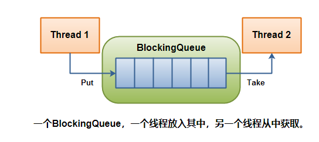
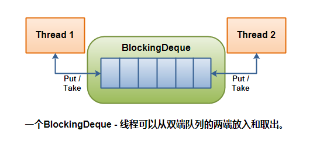

<!DOCTYPE html>


  <html class="light page-post">


<head><meta name="generator" content="Hexo 3.8.0">
  <meta charset="utf-8">
  
  <title>concurrency组件笔记 | 胡思旺</title>

  <meta name="viewport" content="width=device-width, initial-scale=1, maximum-scale=1">

  
    <meta name="keywords" content="全栈,微服务,Java,Netty,Vue,机器学习,Python">
  

  <meta name="description" content="Java Concurrency组件 Java java.util.concurrent包是Java 5引入的，包含一组类，可以更容易地用Java开发并发（多线程）应用程序    BlockingQueue接口 A BlockingQueue通常用于在线程上生成另一个线程消耗的对象:     生成线程将生成新对象并将它们插入队列，直到队列达到它可以包含的内容的某个上限。换句话说，这是限制。如果阻塞">
<meta property="og:type" content="article">
<meta property="og:title" content="concurrency组件笔记">
<meta property="og:url" content="http://yoursite.com/2018/11/02/concurrency组件笔记/index.html">
<meta property="og:site_name" content="胡思旺">
<meta property="og:description" content="Java Concurrency组件 Java java.util.concurrent包是Java 5引入的，包含一组类，可以更容易地用Java开发并发（多线程）应用程序    BlockingQueue接口 A BlockingQueue通常用于在线程上生成另一个线程消耗的对象:     生成线程将生成新对象并将它们插入队列，直到队列达到它可以包含的内容的某个上限。换句话说，这是限制。如果阻塞">
<meta property="og:locale" content="default">
<meta property="og:image" content="http://yoursite.com/2018/11/02/concurrency组件笔记/cc1.PNG">
<meta property="og:image" content="http://yoursite.com/2018/11/02/concurrency组件笔记/cc4.PNG">
<meta property="og:updated_time" content="2018-11-02T10:01:27.208Z">
<meta name="twitter:card" content="summary">
<meta name="twitter:title" content="concurrency组件笔记">
<meta name="twitter:description" content="Java Concurrency组件 Java java.util.concurrent包是Java 5引入的，包含一组类，可以更容易地用Java开发并发（多线程）应用程序    BlockingQueue接口 A BlockingQueue通常用于在线程上生成另一个线程消耗的对象:     生成线程将生成新对象并将它们插入队列，直到队列达到它可以包含的内容的某个上限。换句话说，这是限制。如果阻塞">
<meta name="twitter:image" content="http://yoursite.com/2018/11/02/concurrency组件笔记/cc1.PNG">

  

  
    <link rel="icon" href="/favicon.ico">
  

  <link href="/css/styles.css?v=c114cben" rel="stylesheet">


  
    <link rel="stylesheet" href="/css/personal-style.css">
  

  

  
  <script type="text/javascript">
    var _hmt = _hmt || [];
    (function() {
      var hm = document.createElement("script");
      hm.src = "//hm.baidu.com/hm.js?57e94d016e201fba3603a8a2b0263af0";
      var s = document.getElementsByTagName("script")[0];
      s.parentNode.insertBefore(hm, s);
    })();
  </script>


  
  <script type="text/javascript">
	(function(){
	    var bp = document.createElement('script');
	    var curProtocol = window.location.protocol.split(':')[0];
	    if (curProtocol === 'https') {
	        bp.src = 'https://zz.bdstatic.com/linksubmit/push.js';        
	    }
	    else {
	        bp.src = 'http://push.zhanzhang.baidu.com/push.js';
	    }
	    var s = document.getElementsByTagName("script")[0];
	    s.parentNode.insertBefore(bp, s);
	})();
  </script>


  

</head>
</html>
<body>


  
    <span id="toolbox-mobile" class="toolbox-mobile">盒子</span>
  

  <div class="post-header CENTER">
   
  <div class="toolbox">
    <a class="toolbox-entry" href="/">
      <span class="toolbox-entry-text">盒子</span>
      <i class="icon-angle-down"></i>
      <i class="icon-home"></i>
    </a>
    <ul class="list-toolbox">
      
        <li class="item-toolbox">
          <a class="CIRCLE" href="/archives/" rel="noopener noreferrer" target="_self">
            博客
          </a>
        </li>
      
        <li class="item-toolbox">
          <a class="CIRCLE" href="/project/" rel="noopener noreferrer" target="_self">
            项目
          </a>
        </li>
      
        <li class="item-toolbox">
          <a class="CIRCLE" href="/about/" rel="noopener noreferrer" target="_self">
            联系
          </a>
        </li>
      
    </ul>
  </div>


</div>


  <div id="toc" class="toc-article">
    <strong class="toc-title">文章目录</strong>
    <ol class="toc"><li class="toc-item toc-level-1"><a class="toc-link" href="#Java-Concurrency组件"><span class="toc-text">Java Concurrency组件</span></a><ol class="toc-child"><li class="toc-item toc-level-2"><a class="toc-link" href="#BlockingQueue接口"><span class="toc-text">BlockingQueue接口</span></a></li><li class="toc-item toc-level-2"><a class="toc-link" href="#ArrayBlockingQueue"><span class="toc-text">ArrayBlockingQueue</span></a></li><li class="toc-item toc-level-2"><a class="toc-link" href="#DelayQueue"><span class="toc-text">DelayQueue</span></a></li><li class="toc-item toc-level-2"><a class="toc-link" href="#LinkedBlockingQueue"><span class="toc-text">LinkedBlockingQueue</span></a></li><li class="toc-item toc-level-2"><a class="toc-link" href="#PriorityBlockingQueue"><span class="toc-text">PriorityBlockingQueue</span></a></li><li class="toc-item toc-level-2"><a class="toc-link" href="#SynchronousQueue"><span class="toc-text">SynchronousQueue</span></a></li><li class="toc-item toc-level-2"><a class="toc-link" href="#BlockingDeque接口"><span class="toc-text">BlockingDeque接口</span></a></li><li class="toc-item toc-level-2"><a class="toc-link" href="#ConcurrentMap"><span class="toc-text">ConcurrentMap</span></a></li></ol></li></ol>
  </div>


<div class="content content-post CENTER">
   <article id="post-concurrency组件笔记" class="article article-type-post" itemprop="blogPost">
  <header class="article-header">
    <h1 class="post-title">concurrency组件笔记</h1>

    <div class="article-meta">
      <span>
        <i class="icon-calendar"></i>
        <span>2018.11.02</span>
      </span>

      
        <span class="article-author">
          <i class="icon-user"></i>
          <span>siwang.hu</span>
        </span>
      

      


      
        <span>
          <i class="icon-comment"></i>
          <a href="http://www.github.com/siwanghu/2018/11/02/concurrency组件笔记/#disqus_thread"></a>
        </span>
      

      
      
    </div>
  </header>

  <div class="article-content">
    
      <h1 id="Java-Concurrency组件"><a href="#Java-Concurrency组件" class="headerlink" title="Java Concurrency组件"></a>Java Concurrency组件</h1><blockquote>
<p>Java java.util.concurrent包是Java 5引入的，包含一组类，可以更容易地用Java开发并发（多线程）应用程序  </p>
</blockquote>
<h2 id="BlockingQueue接口"><a href="#BlockingQueue接口" class="headerlink" title="BlockingQueue接口"></a>BlockingQueue接口</h2><blockquote>
<p>A BlockingQueue通常用于在线程上生成另一个线程消耗的对象: </p>
<p>  </p>
<p>生成线程将生成新对象并将它们插入队列，直到队列达到它可以包含的内容的某个上限。换句话说，这是限制。如果阻塞队列达到其上限，则在尝试插入新对象时会阻止生成线程。它一直被阻塞，直到消费线程将一个对象从队列中取出。消费线程不断将对象从阻塞队列中取出并处理它们。如果消费线程尝试将对象从空队列中取出，则消耗线程将被阻塞，直到生成线程将对象放入队列。  </p>
<p><em>无法插入null到BlockingQueue。如果您尝试插入null， BlockingQueue则会抛出一个NullPointerException</em><br> <strong>由于BlockingQueue是一个接口，您需要使用其中一个实现来使用它：</strong>  </p>
<ul>
<li>ArrayBlockingQueue  </li>
<li>DelayQueue  </li>
<li>PriorityBlockingQueue  </li>
<li>SynchronousQueue</li>
</ul>
</blockquote>
<h2 id="ArrayBlockingQueue"><a href="#ArrayBlockingQueue" class="headerlink" title="ArrayBlockingQueue"></a>ArrayBlockingQueue</h2><blockquote>
<ul>
<li><p>ArrayBlockingQueue类实现了BlockingQueue接口</p>
</li>
<li><p>ArrayBlockingQueue是一个有界的阻塞队列，它将元素内部存储在一个数组中。它有界意味着它无法存储无限量的元素。它可以同时存储的元素数量有一个上限。您在实例化时设置上限，之后无法更改。  </p>
</li>
</ul>
</blockquote>
<h2 id="DelayQueue"><a href="#DelayQueue" class="headerlink" title="DelayQueue"></a>DelayQueue</h2><blockquote>
<ul>
<li><p>DelayQueue实现BlockingQueue接口  </p>
</li>
<li><p>DelayQueue队列中每个元素都有个过期时间，并且队列是个优先级队列，当从队列获取元素时候，只有过期元素才会出队列。</p>
</li>
<li><p>在DelayQueue内部阻止元素直到某个延迟到期。元素必须实现接口java.util.concurrent.Delayed。以下是界面的外观：  </p>
<figure class="highlight plain"><table><tr><td class="gutter"><pre><span class="line">1</span><br><span class="line">2</span><br><span class="line">3</span><br></pre></td><td class="code"><pre><span class="line">public interface Delayed extends Comparable&lt;Delayed&lt; &#123;</span><br><span class="line">    public long getDelay(TimeUnit timeUnit);</span><br><span class="line">&#125;</span><br></pre></td></tr></table></figure>
</li>
</ul>
</blockquote>
<blockquote>
<p>getDelay()方法 返回的值应该是在释放此元素之前剩余的延迟  </p>
<p><strong>Demo:</strong><br><figure class="highlight plain"><table><tr><td class="gutter"><pre><span class="line">1</span><br><span class="line">2</span><br><span class="line">3</span><br><span class="line">4</span><br><span class="line">5</span><br><span class="line">6</span><br><span class="line">7</span><br><span class="line">8</span><br><span class="line">9</span><br><span class="line">10</span><br><span class="line">11</span><br><span class="line">12</span><br></pre></td><td class="code"><pre><span class="line">public class DelayQueueExample &#123;</span><br><span class="line"></span><br><span class="line">    public static void main(String[] args) &#123;</span><br><span class="line">        DelayQueue queue = new DelayQueue();</span><br><span class="line"></span><br><span class="line">        Delayed element1 = new DelayedElement();</span><br><span class="line"></span><br><span class="line">        queue.put(element1);</span><br><span class="line"></span><br><span class="line">        Delayed element2 = queue.take();</span><br><span class="line">    &#125;</span><br><span class="line">&#125;</span><br></pre></td></tr></table></figure></p>
</blockquote>
<h2 id="LinkedBlockingQueue"><a href="#LinkedBlockingQueue" class="headerlink" title="LinkedBlockingQueue"></a>LinkedBlockingQueue</h2><blockquote>
<ul>
<li>LinkedBlockingQueue类实现了BlockingQueue接口  <figure class="highlight plain"><table><tr><td class="gutter"><pre><span class="line">1</span><br><span class="line">2</span><br><span class="line">3</span><br><span class="line">4</span><br></pre></td><td class="code"><pre><span class="line">BlockingQueue&lt;String&gt; unbounded = new LinkedBlockingQueue&lt;String&gt;();</span><br><span class="line">BlockingQueue&lt;String&gt; bounded   = new LinkedBlockingQueue&lt;String&gt;(1024);</span><br><span class="line">bounded.put(&quot;Value&quot;);</span><br><span class="line">String value = bounded.take();</span><br></pre></td></tr></table></figure>
</li>
</ul>
</blockquote>
<h2 id="PriorityBlockingQueue"><a href="#PriorityBlockingQueue" class="headerlink" title="PriorityBlockingQueue"></a>PriorityBlockingQueue</h2><blockquote>
<ul>
<li>PriorityBlockingQueue  </li>
<li>PriorityBlockingQueue存储的对象必须是实现Comparable接口的 因为PriorityBlockingQueue队列会根据内部存储的每一个元素的compareTo方法比较每个元素的大小,这样在take出来的时候会根据优先级 将优先级最小的最先取出。  <figure class="highlight plain"><table><tr><td class="gutter"><pre><span class="line">1</span><br><span class="line">2</span><br><span class="line">3</span><br><span class="line">4</span><br><span class="line">5</span><br><span class="line">6</span><br><span class="line">7</span><br><span class="line">8</span><br><span class="line">9</span><br><span class="line">10</span><br><span class="line">11</span><br><span class="line">12</span><br><span class="line">13</span><br><span class="line">14</span><br><span class="line">15</span><br><span class="line">16</span><br><span class="line">17</span><br><span class="line">18</span><br><span class="line">19</span><br><span class="line">20</span><br><span class="line">21</span><br><span class="line">22</span><br><span class="line">23</span><br><span class="line">24</span><br><span class="line">25</span><br><span class="line">26</span><br><span class="line">27</span><br><span class="line">28</span><br><span class="line">29</span><br><span class="line">30</span><br><span class="line">31</span><br><span class="line">32</span><br><span class="line">33</span><br></pre></td><td class="code"><pre><span class="line">public static PriorityBlockingQueue&lt;User&gt; queue = new PriorityBlockingQueue&lt;User&gt;();</span><br><span class="line"> </span><br><span class="line">public static void main(String[] args) &#123;</span><br><span class="line">    queue.add(new User(1,&quot;wu&quot;));</span><br><span class="line">    queue.add(new User(5,&quot;wu5&quot;));</span><br><span class="line">    queue.add(new User(23,&quot;wu23&quot;));</span><br><span class="line">    queue.add(new User(55,&quot;wu55&quot;));</span><br><span class="line">    queue.add(new User(9,&quot;wu9&quot;));</span><br><span class="line">    queue.add(new User(3,&quot;wu3&quot;));</span><br><span class="line">    for (User user : queue) &#123;</span><br><span class="line">        try &#123;</span><br><span class="line">            System.out.println(queue.take().name);</span><br><span class="line">        &#125; catch (InterruptedException e) &#123;</span><br><span class="line">            e.printStackTrace();</span><br><span class="line">        &#125;</span><br><span class="line">    &#125;</span><br><span class="line">&#125;</span><br><span class="line"> </span><br><span class="line">static class User implements Comparable&lt;User&gt;&#123;</span><br><span class="line"> </span><br><span class="line">    public User(int age,String name) &#123;</span><br><span class="line">        this.age = age;</span><br><span class="line">        this.name = name;</span><br><span class="line">    &#125;</span><br><span class="line"> </span><br><span class="line">    int age;</span><br><span class="line">    String name;</span><br><span class="line"> </span><br><span class="line">    @Override</span><br><span class="line">    public int compareTo(User o) &#123;</span><br><span class="line">        return this.age &gt; o.age ? -1 : 1;</span><br><span class="line">    &#125;</span><br><span class="line">&#125;</span><br></pre></td></tr></table></figure>
</li>
</ul>
</blockquote>
<h2 id="SynchronousQueue"><a href="#SynchronousQueue" class="headerlink" title="SynchronousQueue"></a>SynchronousQueue</h2><blockquote>
<ul>
<li>SynchronousQueue实现BlockingQueue接口</li>
<li>SynchronousQueue是一个内部只能包含单个元素的队列。将元素插入队列的线程被阻塞，直到另一个线程从队列中获取该元素。同样，如果线程尝试获取元素并且当前不存在任何元素，则该线程将被阻塞，直到线程将元素插入队列。</li>
</ul>
</blockquote>
<h2 id="BlockingDeque接口"><a href="#BlockingDeque接口" class="headerlink" title="BlockingDeque接口"></a>BlockingDeque接口</h2><blockquote>
<ul>
<li>双端队列  </li>
</ul>
<p>  </p>
<ul>
<li><p>线程将生成元素并将它们插入队列的任一端。如果双端队列当前已满，则插入线程将被阻塞，直到删除线程将一个元素从双端队列中取出。如果deque当前为空，则将阻止删除线程，直到插入线程将元素插入到双端队列中。  </p>
</li>
<li><p>LinkedBlockingDeque类是BlockingDeque接口的具体实现  </p>
</li>
</ul>
</blockquote>
<h2 id="ConcurrentMap"><a href="#ConcurrentMap" class="headerlink" title="ConcurrentMap"></a>ConcurrentMap</h2><figure class="highlight plain"><table><tr><td class="gutter"><pre><span class="line">1</span><br><span class="line">2</span><br><span class="line">3</span><br><span class="line">4</span><br><span class="line">5</span><br></pre></td><td class="code"><pre><span class="line">ConcurrentMap concurrentMap = new ConcurrentHashMap（）;</span><br><span class="line"></span><br><span class="line">concurrentMap.put（“key”，“value”）;</span><br><span class="line"></span><br><span class="line">Object value = concurrentMap.get（“key”）;</span><br></pre></td></tr></table></figure>
<blockquote>
<ul>
<li>java.util.concurrent.ConcurrentMap接口表示一个 能够处理并发访问（put和gets）的Map  </li>
</ul>
</blockquote>

    
  </div>

</article>


   
  <div class="text-center donation">
    <div class="inner-donation">
      <span class="btn-donation">支持一下</span>
      <div class="donation-body">
        <div class="tip text-center">扫一扫，支持胡思旺</div>
        <ul>
        
          <li class="item">
            
              <span>微信扫一扫</span>
            
            
          </li>
        
          <li class="item">
            
              <span>支付宝扫一扫</span>
            
            
          </li>
        
        </ul>
      </div>
    </div>
  </div>


   
  <div class="box-prev-next clearfix">
    <a class="show pull-left" href="/2018/11/01/linux笔记/">
        <i class="icon icon-angle-left"></i>
    </a>
    <a class="show pull-right" href="/2018/11/06/netty线程模型/">
        <i class="icon icon-angle-right"></i>
    </a>
  </div>


   
      <div class="git"></div>
   
</div>


  <a id="backTop" class="back-top">
    <i class="icon-angle-up"></i>
  </a>


  <div class="modal" id="modal">
  <span id="cover" class="cover hide"></span>
  <div id="modal-dialog" class="modal-dialog hide-dialog">
    <div class="modal-header">
      <span id="close" class="btn-close">关闭</span>
    </div>
    <hr>
    <div class="modal-body">
      <ul class="list-toolbox">
        
          <li class="item-toolbox">
            <a class="CIRCLE" href="/archives/" rel="noopener noreferrer" target="_self">
              博客
            </a>
          </li>
        
          <li class="item-toolbox">
            <a class="CIRCLE" href="/project/" rel="noopener noreferrer" target="_self">
              项目
            </a>
          </li>
        
          <li class="item-toolbox">
            <a class="CIRCLE" href="/about/" rel="noopener noreferrer" target="_self">
              联系
            </a>
          </li>
        
      </ul>

    </div>
  </div>
</div>


  
      <div class="fexo-comments comments-post">
    
  <section class="disqus-comments">
    <div id="disqus_thread">
      <noscript>Please enable JavaScript to view the <a href="//disqus.com/?ref_noscript">comments powered by Disqus.</a></noscript>
    </div>
  </section>

  <script>
    var disqus_shortname = 'forsigner';
    
    var disqus_url = 'http://yoursite.com/2018/11/02/concurrency组件笔记/';
    
    (function(){
      var dsq = document.createElement('script');
      dsq.type = 'text/javascript';
      dsq.async = true;
      dsq.src = '//' + disqus_shortname + '.disqus.com/embed.js';
      (document.getElementsByTagName('head')[0] || document.getElementsByTagName('body')[0]).appendChild(dsq);
    })();
  </script>

  <script id="dsq-count-scr" src="//forsigner.disqus.com/count.js" async></script>


    

    
    

    

    
    

  </div>

  

  <script type="text/javascript">
  function loadScript(url, callback) {
    var script = document.createElement('script')
    script.type = 'text/javascript';

    if (script.readyState) { //IE
      script.onreadystatechange = function() {
        if (script.readyState == 'loaded' ||
          script.readyState == 'complete') {
          script.onreadystatechange = null;
          callback();
        }
      };
    } else { //Others
      script.onload = function() {
        callback();
      };
    }

    script.src = url;
    document.getElementsByTagName('head')[0].appendChild(script);
  }

  window.onload = function() {
    loadScript('/js/bundle.js?235683', function() {
      // load success
    });
  }
</script>

</body>
</html>
